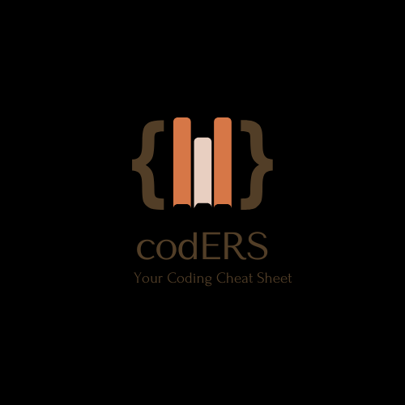

Welcome to codERS!
Who are we?
codERS is an interactive and educational web platform designed to empower programmers of all levels — from beginners to advanced developers — by offering reliable, up-to-date information on various programming languages and hands-on coding help.
Key Features
Programming Language Guides Programming Language Guides codERS provides clear, structured documentation and tutorials on major programming languages including:- HTML
- Python
What is codERS all about?
Coding Help & Q&A
Users can:- Ask coding-related questions
- Post code snippets for review
- Get step-by-step solutions to their programming problems
- Browse previously solved questions for common issues
Code Playground
A built-in code editor and compiler lets users:- Write and test code live
- Run scripts in supported languages
- Share results and code output
Tools & Resources
codERS includes handy tools like:- Code formatters and validators
- Regex testers
- Cheat sheets and quick reference cards
Target Audience:
- Students learning to code
- Self-taught developers
- Bootcamp participants
- Professionals seeking quick answers